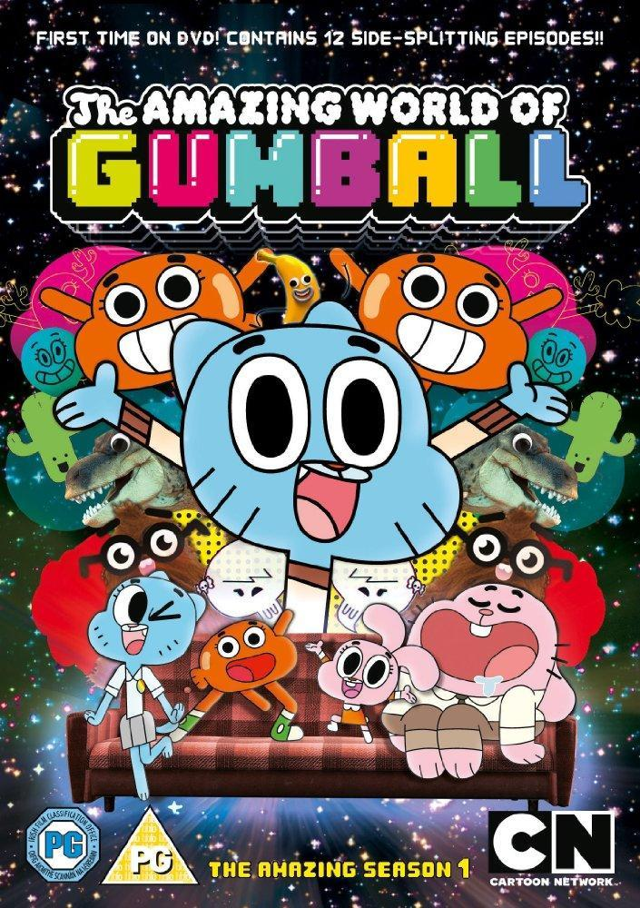
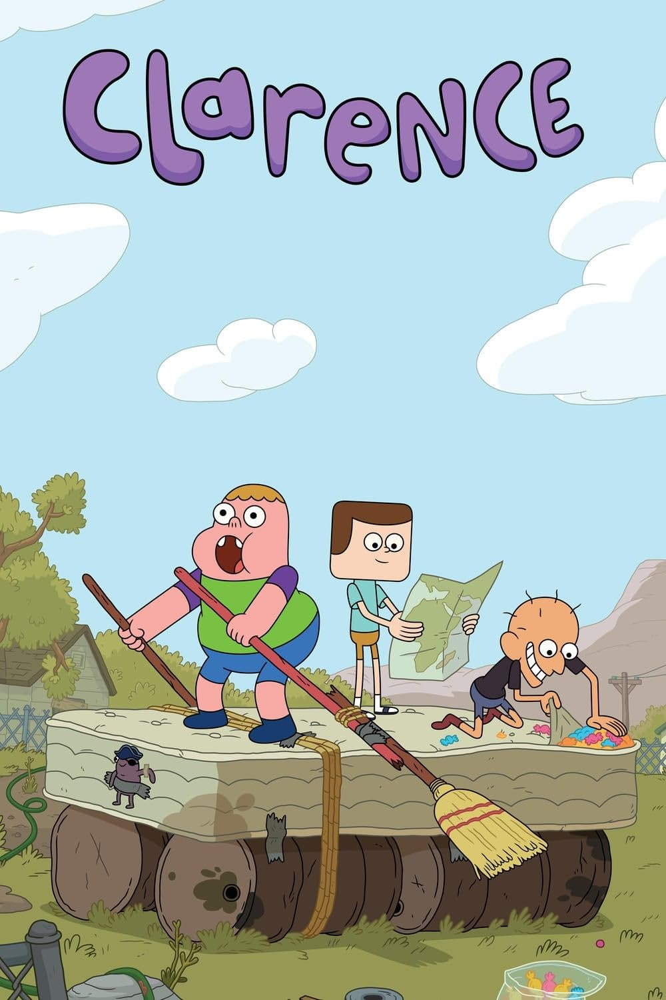
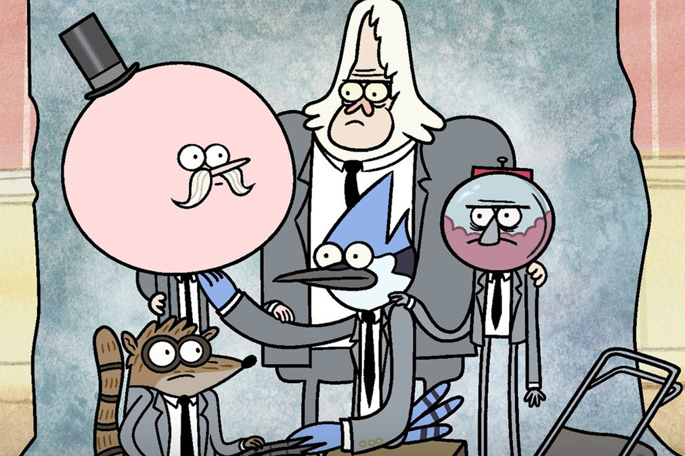
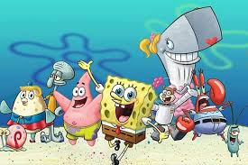
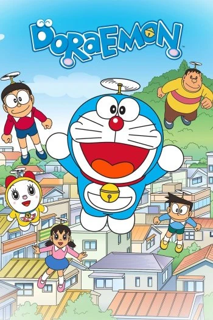
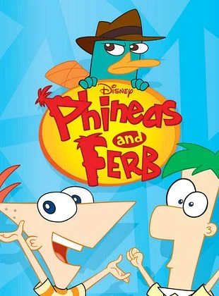
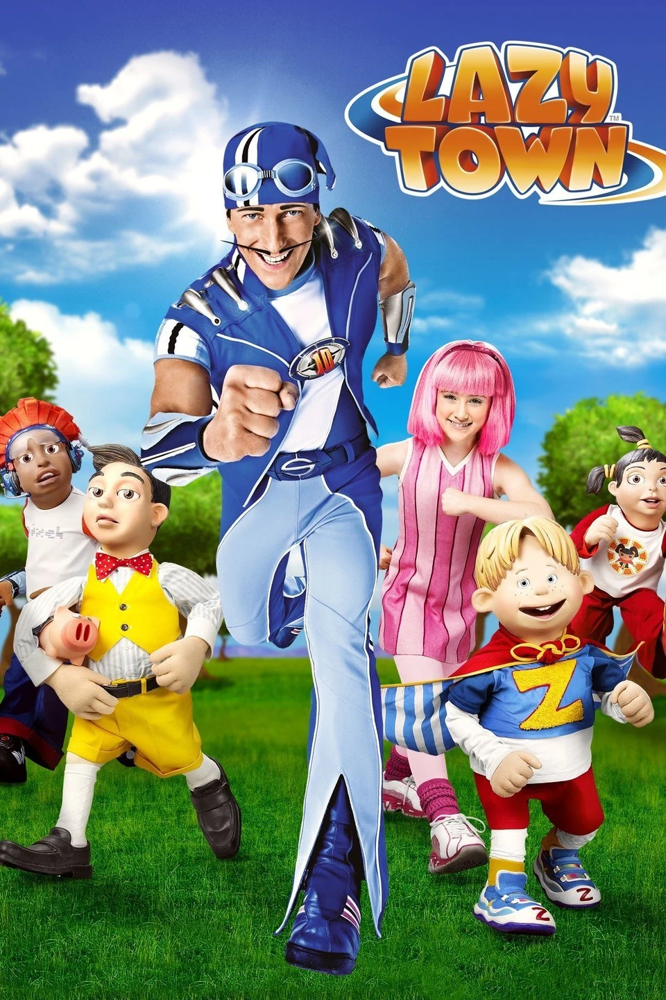
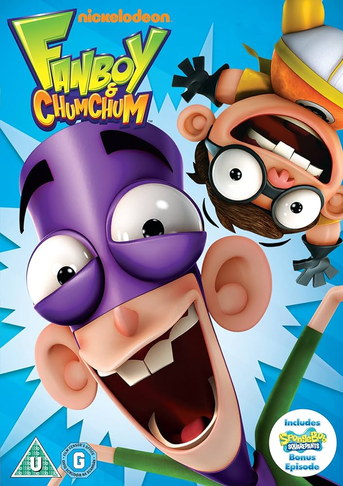

Gumball
El Asombroso Mundo de Gumball es una serie animada de comedia que sigue las aventuras de Gumball Watterson, un gato azul, y su hermano Darwin, un pez con patas, en la ciudad de Elmore. Juntos enfrentan situaciones absurdas y divertidas con su familia y amigos, mezclando animación 2D, 3D y acción real.
El pájaro loco
El Pájaro Loco es una serie animada de comedia que sigue a un travieso y alocado pájaro carpintero llamado Woody Woodpecker. Con su risa inconfundible, se mete en todo tipo de enredos mientras se burla de sus adversarios y causa caos con su personalidad juguetona.
La pantera rosa

La Pantera Rosa es una serie animada de comedia que sigue a una elegante y astuta pantera rosa en situaciones cómicas y absurdas, casi siempre en silencio. Con su humor visual y estilo icónico, la serie presenta enredos divertidos con personajes como el torpe Inspector Clouseau.
Clarence
Clarence es una serie animada de comedia que sigue a Clarence, un niño optimista y entusiasta, mientras explora la vida cotidiana con sus amigos Jeff y Sumo en la ciudad de Aberdale. Juntos viven aventuras simples pero significativas, resaltando la diversión en lo ordinario.
Historias corrientes
Historias Corrientes es una serie animada de comedia que sigue a Mordecai, un arrendajo azul, y Rigby, un mapache, dos amigos holgazanes que trabajan en un parque. Sus intentos por evitar el trabajo los llevan a situaciones surrealistas y absurdas, mezclando lo cotidiano con lo fantástico.
Hora de aventuras

Hora de Aventuras es una serie animada de fantasía que sigue a Finn, un valiente niño, y Jake, su perro con poderes elásticos, mientras exploran la mágica y postapocalíptica Tierra de Ooo. Juntos viven aventuras épicas, enfrentan criaturas extrañas y descubren secretos del universo.
Bob esponja
Bob Esponja es una serie animada de comedia que sigue a Bob Esponja, una esponja marina optimista y trabajadora, en sus aventuras en Fondo de Bikini. Junto a su mejor amigo Patricio y su gruñón vecino Calamardo, vive situaciones disparatadas mientras trabaja en el Crustáceo Cascarudo
Doraemon
Doraemon es una serie animada que sigue a Doraemon, un gato robótico del futuro, que ayuda a Nobita, un niño torpe y perezoso, con inventos sacados de su bolsillo mágico. Juntos viven divertidas y emocionantes aventuras mientras intentan resolver problemas cotidianos, aunque muchas veces con consecuencias inesperadas.
Ben 10

Ben 10 es una serie animada de acción y ciencia ficción que sigue a Ben Tennyson, un niño que encuentra el Omnitrix, un reloj alienígena que le permite transformarse en diferentes criaturas con habilidades especiales. Junto a su prima Gwen y su abuelo Max, enfrenta villanos y protege el mundo de amenazas extraterrestres.
Phineas y Ferb
Phineas y Ferb es una serie animada que sigue a dos hermanos, Phineas y Ferb, quienes pasan el verano creando inventos extravagantes y emocionantes. Mientras tanto, su hermana Candace intenta "delatarlos", y el agente P, un ornitorrinco secreto, combate al malvado Dr. Doofenshmirtz, quien siempre tiene planes absurdos.
Lazy Town
LazyTown es una serie infantil que promueve un estilo de vida activo y saludable, protagonizada por Stephanie, una niña enérgica, y Sportacus, un héroe atlético. Juntos luchan contra Robbie Rotten, quien intenta que los niños lleven una vida perezosa, mientras enseñan la importancia del ejercicio y una alimentación equilibrada.
Fan boy y Chum Chum
Fanboy y Chum Chum es una serie animada de comedia que sigue las travesuras de dos niños hiperactivos, Fanboy y su mejor amigo Chum Chum, quienes viven aventuras absurdas y exageradas en su mundo de fantasía. A menudo se enredan en situaciones ridículas mientras disfrutan de su amor por los cómics, la cultura pop y la diversión